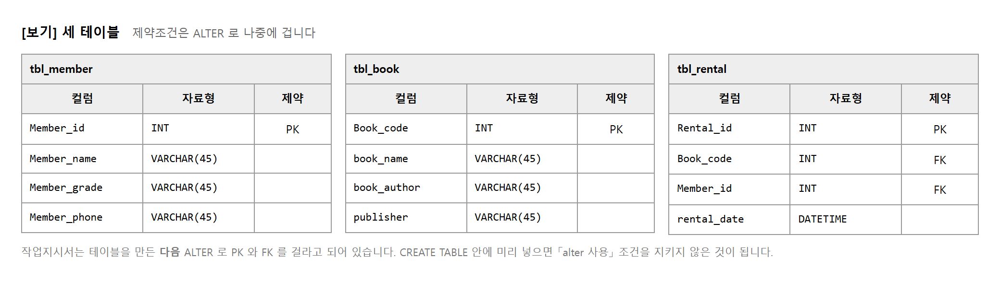
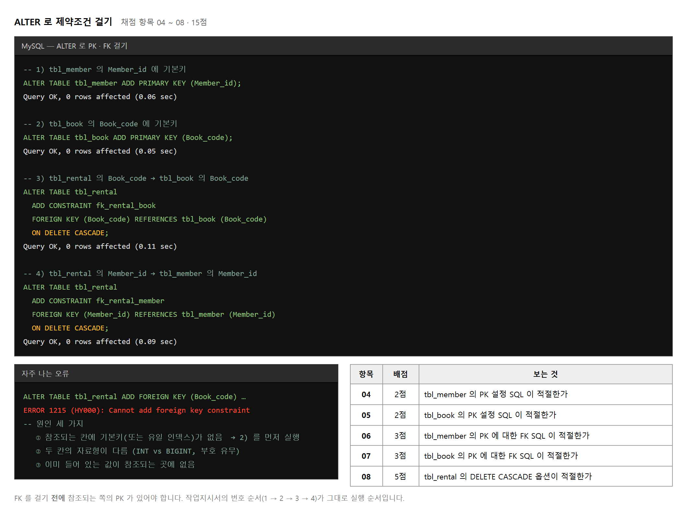
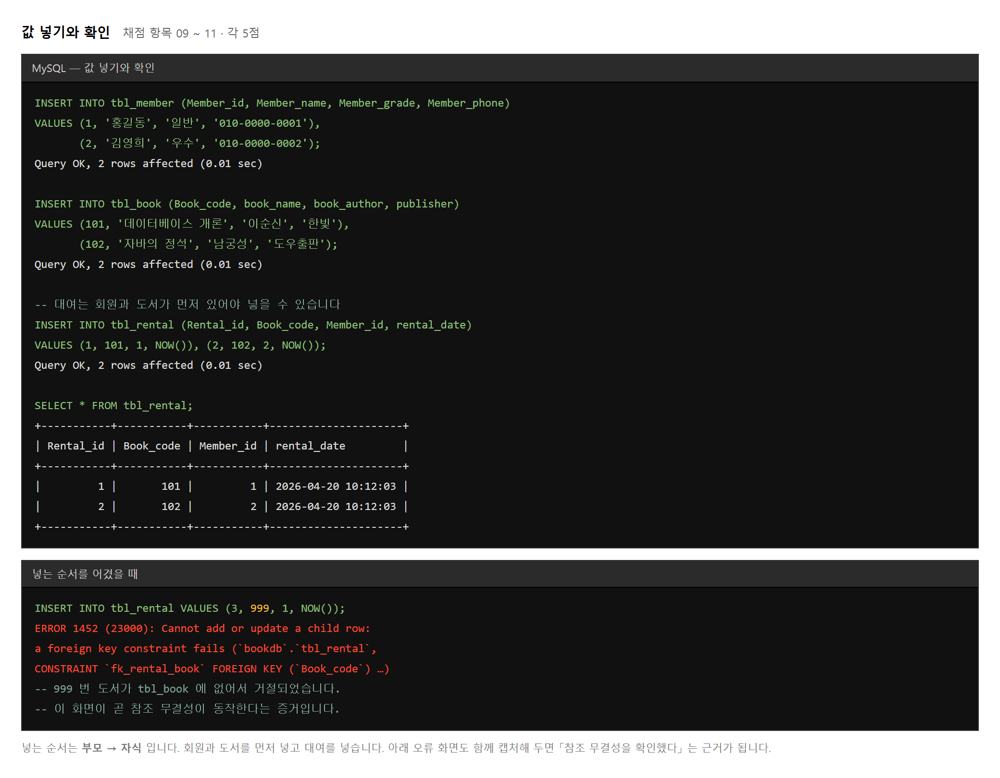
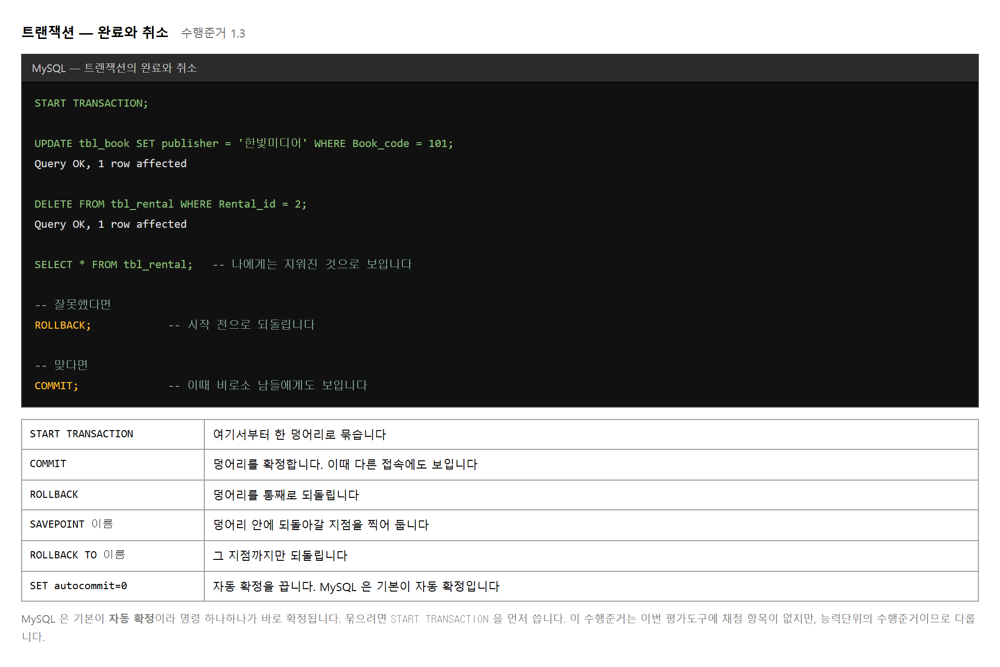
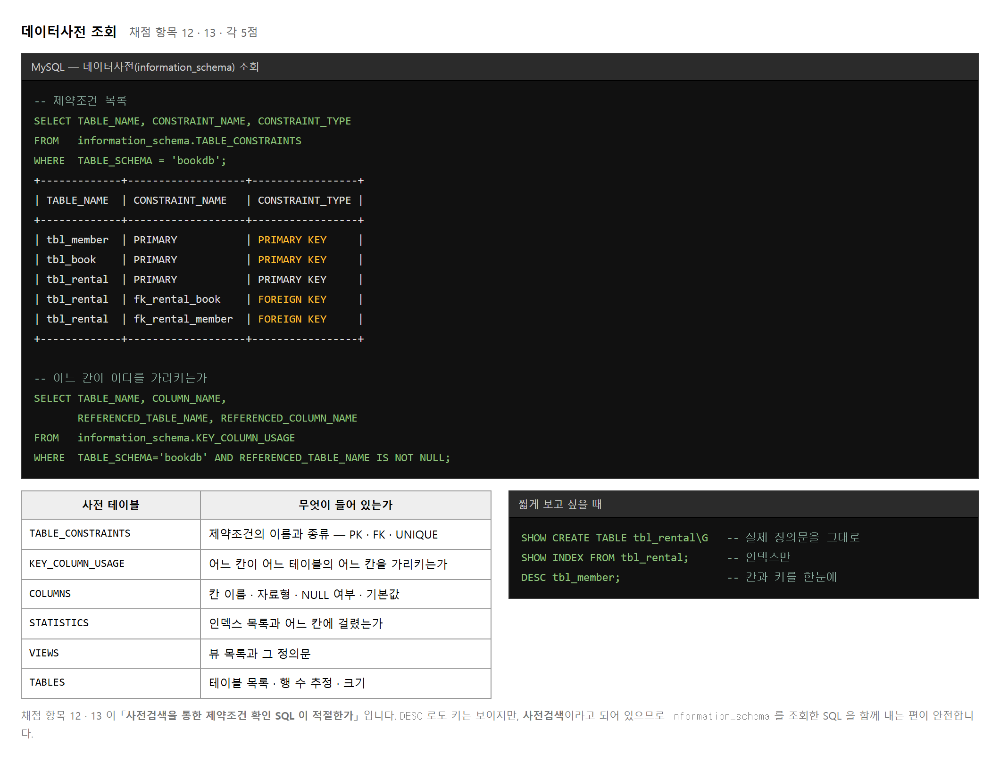
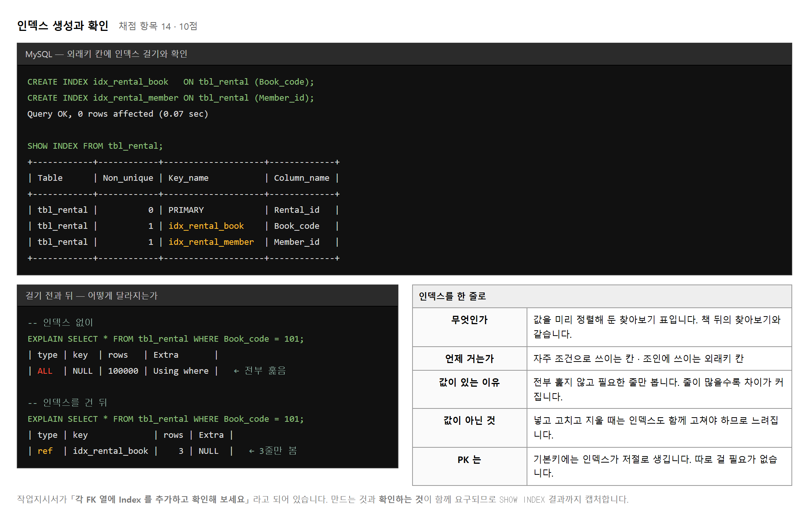
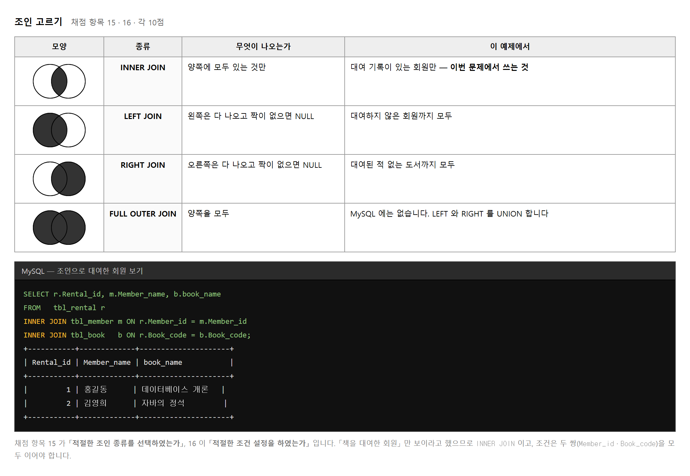
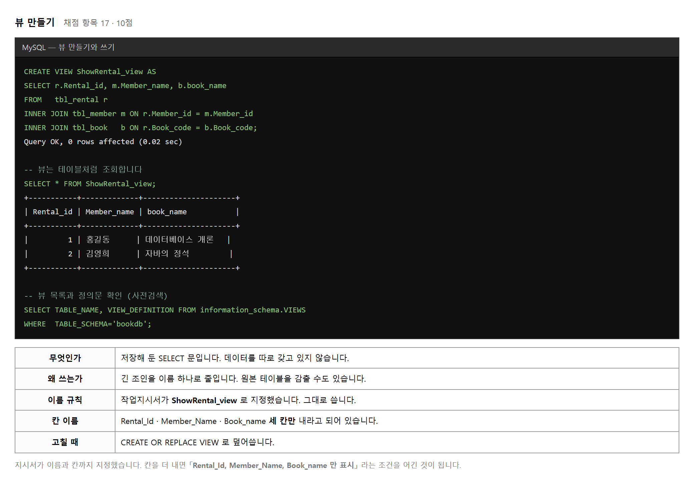
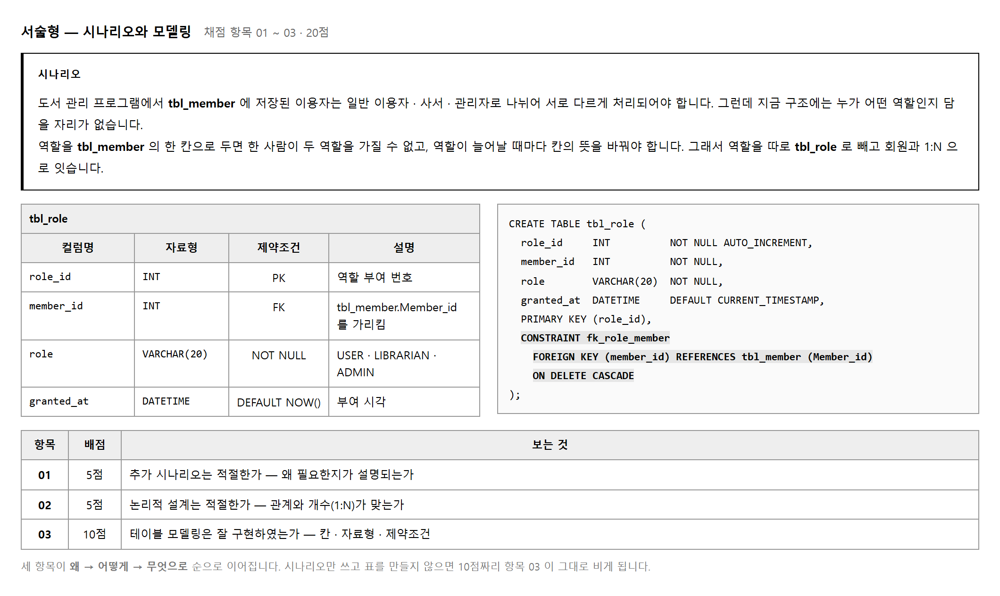
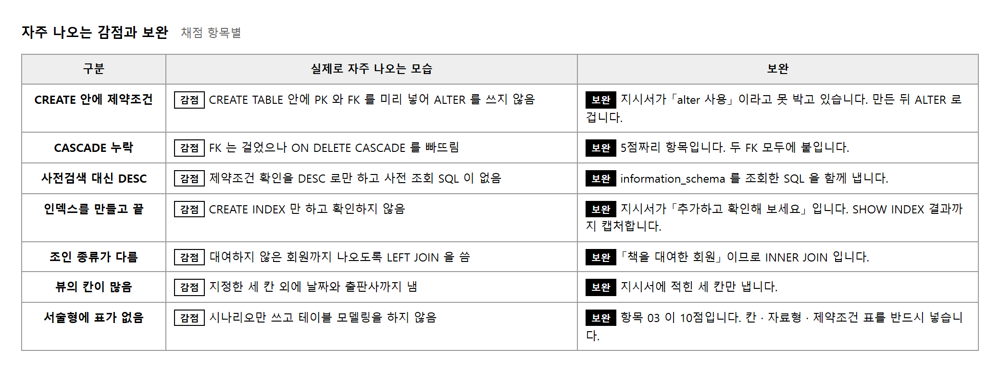

능력단위 SQL활용 (2001020413_19v4) / 3수준 · 평가방법 서술형 (20점) + 평가자 체크리스트 (80점)
제출물은 둘입니다. 답변란에 적은 SQL 과 그 SQL 을 실행한 결과 화면을 모은 PPT 입니다. 둘 중 하나만 내면 채점자가 「적절한가」 를 판정할 근거가 반쪽이 됩니다.
| 묶음 | 하는 일 | 확인하는 것 | 배점 |
|---|---|---|---|
| 서술형 | 관계형 테이블 추가 시나리오와 모델링 | 시나리오 5 · 논리 설계 5 · 모델링 10 | 20 |
| ① | 제약조건 설정과 값 넣기 | PK 2 · 2 · FK 3 · 3 · CASCADE 5 · INSERT 5 · 5 · 5 | 30 |
| ② | 사전 조회 · 인덱스 · 조인 · 뷰 | 사전 5 · 5 · 인덱스 10 · 조인 10 · 조건 10 · 관계형 테이블 10 | 50 |
평가방법이 평가자 체크리스트 이므로 부분 점수가 없습니다. SQL 한 줄이 맞으면 그 항목의 점수를 다 받고, 틀리면 0점입니다.
앞 교과에서 데이터베이스와 테이블을 만들었습니다. 이 교과는 그 테이블을 실제로 다루는 SQL 을 다룹니다. 만드는 문장(DDL) · 다루는 문장(DML) · 통제하는 문장(DCL) 세 가지를 씁니다.
| 갈래 | 대표 명령 | 무엇을 하는가 |
|---|---|---|
| DDL | CREATE · ALTER · DROP |
테이블 · 인덱스 · 뷰의 틀을 만들고 고칩니다 |
| DML | SELECT · INSERT ·
UPDATE · DELETE |
틀 안의 값을 넣고 꺼내고 고칩니다 |
| DCL | COMMIT · ROLLBACK ·
GRANT |
작업의 확정과 취소, 권한을 다룹니다 |
두 요소 모두 마지막에 「데이터사전을 조회하는 명령문을 작성할 수 있다」 가 들어 있습니다. 만드는 것만큼 만들어졌는지 확인하는 것을 중요하게 봅니다.
예제는 평가도구 작업지시서의 [보기] 세 테이블입니다.
앞 교과에서 만든 bookdb 안에 만들어도 되고, 새 데이터베이스를 만들어도 됩니다.
이 교과의 실습은 치고, 보고, 캡처하는 되풀이입니다. 명령 하나를 칠 때마다 결과를 확인하고 캡처해 두면 마지막에 모을 것이 없습니다.
| 문제 | 지시 | 채점 항목 | 배점 |
|---|---|---|---|
| 1 · 2 | PK 를 ALTER 로 설정 | 04 · 05 | 각 2점 |
| 3 · 4 | FK 를 ALTER 로 설정 · DELETE CASCADE | 06 · 07 · 08 | 3 · 3 · 5점 |
| 5 | 각 테이블에 값 넣기 | 09 · 10 · 11 | 각 5점 |
| 6 | 제약조건 확인 (사전검색) | 12 · 13 | 각 5점 |
| 7 | FK 열에 인덱스 추가하고 확인 | 14 | 10점 |
| 8 | Inner Join 을 쓴 뷰 만들기 | 15 · 16 · 17 | 각 10점 |
| 서술형 | 관계형 테이블 추가 시나리오와 모델링 | 01 · 02 · 03 | 5 · 5 · 10점 |
답변란에는 실제로 실행해 본 SQL 을 옮겨 적습니다. 머리로 쓴 문장은 세미콜론이나 따옴표에서 어긋나는 일이 많습니다. Workbench 에서 실행해 초록 체크를 확인한 뒤 복사해 붙이는 것이 안전합니다.

CREATE TABLE tbl_member ( Member_id INT, Member_name VARCHAR(45), Member_grade VARCHAR(45), Member_phone VARCHAR(45) ); CREATE TABLE tbl_book ( Book_code INT, book_name VARCHAR(45), book_author VARCHAR(45), publisher VARCHAR(45) ); CREATE TABLE tbl_rental ( Rental_id INT, Book_code INT, Member_id INT, rental_date DATETIME );
CREATE TABLE 안에 PRIMARY KEY 를 미리 적지 마십시오.
작업지시서가 「alter 사용」 이라고 못 박고 있습니다.
미리 걸어 두면 ALTER 문을 쓸 일이 없어져 항목 04 ~ 07 을 보일 수 없습니다.
다만 FK 를 걸려면 참조되는 칸이 NOT NULL 이어야 문제가 없습니다.
기본키를 나중에 걸 예정이라면 INT NOT NULL 로 만들어 두는 편이 안전합니다.

외래키는 가리키는 쪽에 기본키가 있어야 걸립니다.
3번(FK)을 1·2번(PK)보다 먼저 실행하면 ERROR 1215 가 납니다.
오류가 나면 대부분 아래 셋 중 하나입니다.
INT 와 BIGINT,
부호 있음과 없음이 섞이면 걸리지 않습니다.ALTER TABLE tbl_rental ADD CONSTRAINT fk_rental_book FOREIGN KEY (Book_code) REFERENCES tbl_book (Book_code) ON DELETE CASCADE;
제약조건에 이름을 붙여 두면 나중에 지우거나 확인할 때 편합니다.
이름 없이 걸면 tbl_rental_ibfk_1 처럼 저절로 붙습니다.
감점 FK 는 걸었으나 ON DELETE CASCADE 를 빠뜨림
권함 두 FK 모두에 붙입니다. 항목 08 이 5점입니다

-- ① 칸 이름을 적는 방식 — 권합니다 INSERT INTO tbl_member (Member_id, Member_name, Member_grade, Member_phone) VALUES (1, '홍길동', '일반', '010-0000-0001'); -- ② 생략하는 방식 — 칸 순서가 바뀌면 엉뚱한 곳에 들어갑니다 INSERT INTO tbl_member VALUES (1, '홍길동', '일반', '010-0000-0001');
답변란에는 ① 로 적습니다. 칸 이름이 있으면 채점자가 무엇을 어디에 넣는지 바로 압니다.
INSERT INTO tbl_book (Book_code, book_name, book_author, publisher)
VALUES (101, '데이터베이스 개론', '이순신', '한빛'),
(102, '자바의 정석', '남궁성', '도우출판');
쉼표로 이어 붙이면 한 번에 여러 줄을 넣습니다. 한 문장이므로 하나라도 틀리면 모두 들어가지 않습니다.
999)로 대여를 넣어 보고 거절되는 화면을 캡처하십시오.
6번 문제의 「FK 확인」 을 보이는 데에도 쓸 수 있고,
제약조건이 실제로 동작한다는 것을 한 장으로 증명합니다.
대여를 한 건 처리하려면 대여 기록을 넣고 도서 상태를 바꾸는 두 가지가 함께 되어야 합니다. 앞의 것만 되고 뒤의 것이 실패하면 데이터가 어긋난 채로 남습니다. 그래서 둘을 한 덩어리로 묶고, 다 되면 확정하고 하나라도 안 되면 통째로 되돌립니다.

START TRANSACTION; DELETE FROM tbl_rental WHERE Rental_id = 2; SELECT * FROM tbl_rental; -- 나에게는 지워져 보입니다 -- 다른 창을 하나 더 열어 같은 조회를 해 보십시오. 아직 남아 있습니다. ROLLBACK; SELECT * FROM tbl_rental; -- 되돌아왔습니다
이 수행준거는 이번 평가도구에 대응하는 채점 항목이 없습니다. 다만 능력단위의 수행준거이고 다음 교과의 서버 프로그램에서 바로 쓰이므로 함께 다룹니다.
데이터베이스는 자기가 무엇을 갖고 있는지를 다시 테이블로 갖고 있습니다.
MySQL 에서는 information_schema 라는 이름입니다.
이것을 조회하면 어떤 테이블에 어떤 제약조건과 인덱스가 걸렸는지 알 수 있습니다.

| 방법 | 보기 | 차이 |
|---|---|---|
| SHOW · DESC | DESC tbl_member; |
빠르고 짧습니다. 그러나 조건을 걸거나 여러 테이블을 한 번에 볼 수 없습니다 |
| 사전 조회 | SELECT … FROM information_schema.TABLE_CONSTRAINTS |
일반 SELECT 이므로 조건 · 정렬 · 조인이 됩니다 |
DESC 만 내면 인정되지 않을 수 있습니다.
information_schema 를 조회한 SQL 을 답변란에 적고, 그 결과 화면을 캡처하십시오.

외래키가 걸린 칸은 조인에 쓰이고, 부모를 지울 때 검사에도 쓰입니다. 둘 다 그 칸으로 찾는 일이므로 인덱스가 있으면 빨라집니다.
MySQL 의 InnoDB 는 외래키를 걸면 인덱스를 저절로 만들어 주기도 합니다.
그래도 작업지시서가 「각 FK 열에 Index 를 추가하고」 라고 했으므로
CREATE INDEX 문을 명시적으로 적습니다.
CREATE INDEX idx_rental_book ON tbl_rental (Book_code); CREATE INDEX idx_rental_member ON tbl_rental (Member_id); SHOW INDEX FROM tbl_rental; -- 확인 SELECT INDEX_NAME, COLUMN_NAME -- 사전으로 확인해도 됩니다 FROM information_schema.STATISTICS WHERE TABLE_SCHEMA='bookdb' AND TABLE_NAME='tbl_rental';
감점 CREATE INDEX 만 적고 확인 결과가 없음
권함 만든 SQL 과 SHOW INDEX 결과를 한 쪽에 함께 둡니다

채점 항목 16 이 「적절한 조건 설정을 하였는가」 입니다. 테이블 셋을 이으려면 조건이 둘 필요합니다. 대여는 회원과도 이어야 하고 도서와도 이어야 하기 때문입니다.
FROM tbl_rental r INNER JOIN tbl_member m ON r.Member_id = m.Member_id -- 조건 1 INNER JOIN tbl_book b ON r.Book_code = b.Book_code -- 조건 2
조건을 하나만 걸면 남은 테이블과 모든 줄이 짝지어져 줄 수가 부풀어 오릅니다. 결과의 줄 수가 대여 건수보다 많으면 조건이 빠진 것입니다.
tbl_rental r 처럼 짧은 이름을 붙이면 r.Member_id 로 쓸 수 있습니다.
두 테이블에 같은 이름의 칸이 있을 때 어느 쪽인지 밝히지 않으면
Column 'Member_id' in field list is ambiguous 오류가 납니다.
LEFT JOIN 으로도 실행해 보고 줄 수를 비교하십시오.
대여하지 않은 회원이 있으면 줄이 늘어납니다.
그 차이를 보면 왜 INNER JOIN 인지 설명할 수 있습니다.

| 지정 | 지시서의 문구 | 지키는 법 |
|---|---|---|
| 뷰 이름 | 뷰테이블명 : ShowRental_view | 대소문자까지 그대로 씁니다 |
| 조인 종류 | JOIN 종류 : Inner Join 사용할 것 | INNER JOIN 으로 적습니다.
JOIN 만 써도 같은 뜻이지만 명시하는 편이 안전합니다 |
| 표시할 칸 | Rental_Id, Member_Name, Book_name 만 표시 | 세 칸만 SELECT 합니다. SELECT * 는 조건 위반입니다 |
SELECT * FROM ShowRental_view; -- 써 보기 SHOW CREATE VIEW ShowRental_view\G -- 정의 확인 SELECT TABLE_NAME FROM information_schema.VIEWS WHERE TABLE_SCHEMA = 'bookdb'; -- 사전으로 확인
수행준거 2.1 이 「테이블의 인덱스와 뷰를 파악하기 위해 데이터사전을 조회」 입니다. 뷰를 만든 뒤 사전에서 확인한 화면까지 있으면 그 준거도 함께 보입니다.
문제는 「현재 만들어진 ERD 에서 1개 이상의 관계형 테이블을 생성하기 위한 시나리오를 예상하고 서술해 보세요」 입니다. 지금 구조로는 담을 수 없는 요구가 무엇인지 찾아 적는 일입니다.
tbl_role 이 그렇게 나옵니다.세 문장이면 충분합니다. 지금 무엇이 안 되는가 → 왜 칸으로는 안 되는가 → 그래서 어떻게 하는가.

약함 역할 테이블이 있으면 편리할 것 같습니다
권함 한 회원이 사서이면서 관리자일 수 있으므로 칸 하나로는 담기지 않습니다. 그래서 역할을 따로 빼고 회원과 1:N 으로 잇습니다
새 테이블이 기존 테이블과 어떤 관계로 몇 대 몇 인지를 밝힙니다.
| 확인할 것 | 이 예제에서 |
|---|---|
| 누가 부모인가 | tbl_member — 회원이 있어야 역할을 줍니다 |
| 몇 대 몇인가 | 1:N — 한 회원이 여러 역할을 가질 수 있습니다 |
| 어느 칸으로 잇는가 | tbl_role.member_id → tbl_member.Member_id |
| 부모가 지워지면 | ON DELETE CASCADE — 역할도 함께 지웁니다 |
10점짜리입니다. 칸 이름 · 자료형 · 제약조건 세 칸을 갖춘 표를 만듭니다.
가능하면 CREATE TABLE 문까지 함께 적습니다.
CREATE TABLE tbl_role (
role_id INT NOT NULL AUTO_INCREMENT,
member_id INT NOT NULL,
role VARCHAR(20) NOT NULL,
granted_at DATETIME DEFAULT CURRENT_TIMESTAMP,
PRIMARY KEY (role_id),
CONSTRAINT fk_role_member
FOREIGN KEY (member_id) REFERENCES tbl_member (Member_id)
ON DELETE CASCADE
);
CREATE TABLE 문을 함께 내고,
가능하면 실제로 만들어 본 결과 화면까지 붙이면 근거가 분명해집니다.
제출 방법이 둘로 나뉘어 있습니다.
답변란의 SQL 과 PPT 의 결과 화면이 같은 문장이어야 합니다. 답변란은 고쳐 적고 캡처는 옛 것을 그대로 두면 둘이 어긋납니다.
| 상황 | 이렇게 캡처합니다 |
|---|---|
| 명령이 성공 | 명령문과 Query OK 가 한 장에 함께 보이게 자릅니다 |
| 조회 결과 | 질의문과 결과 표를 한 장에. Workbench 라면 위쪽 편집창과 아래 결과창을 함께 |
| 오류를 보일 때 | 어떤 명령에서 무슨 오류가 났는지 함께 보이게 자릅니다 |
| 긴 결과 | 앞 몇 줄과 마지막 줄 수 표시가 보이면 충분합니다 |
| 번호 | 배점 | 확인할 것 | 근거 쪽 |
|---|---|---|---|
| 01 | 5 | 추가 시나리오는 적절한가 | |
| 02 | 5 | 논리적 설계는 적절한가 | |
| 03 | 10 | 테이블 모델링은 잘 구현하였는가 | |
| 04 | 2 | tbl_member 의 PK 설정 SQL | |
| 05 | 2 | tbl_book 의 PK 설정 SQL | |
| 06 | 3 | tbl_member 의 PK 에 대한 FK SQL | |
| 07 | 3 | tbl_book 의 PK 에 대한 FK SQL | |
| 08 | 5 | tbl_rental 의 DELETE CASCADE 옵션 | |
| 09 | 5 | tbl_member 의 INSERT SQL | |
| 10 | 5 | tbl_book 의 INSERT SQL | |
| 11 | 5 | tbl_rental 의 INSERT SQL | |
| 12 | 5 | tbl_member 의 사전검색 제약조건 확인 SQL | |
| 13 | 5 | tbl_book 의 사전검색 제약조건 확인 SQL | |
| 14 | 10 | tbl_rental 의 FK 에 index 설정 SQL | |
| 15 | 10 | 적절한 조인 종류를 선택하였는가 | |
| 16 | 10 | 적절한 조건 설정을 하였는가 | |
| 17 | 10 | 하나 이상의 관계형 테이블이 구성되어 있는가 |
DROP DATABASE) 답변란의 SQL 을
위에서부터 차례로 다시 실행해 보십시오.
오류 없이 끝까지 돌면 순서와 문법이 모두 맞는 것입니다.
아래 일곱 가지가 되풀이되는 감점입니다. SQL 을 몰라서가 아니라 지시서가 지정한 방법을 지나쳐서 생깁니다.
